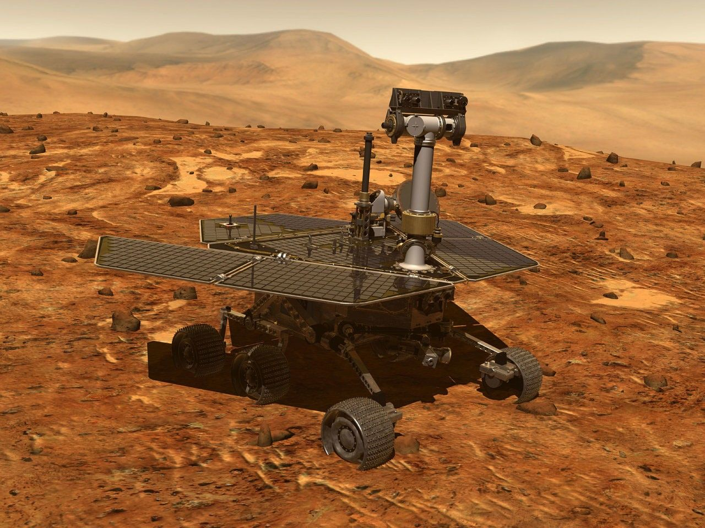
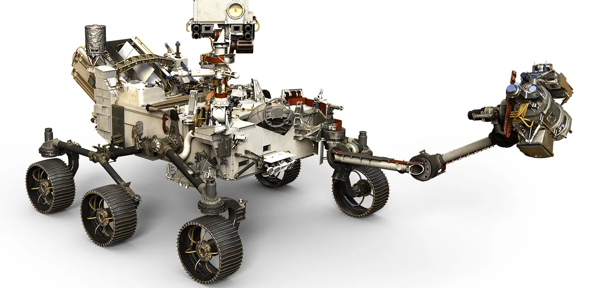

Mission History & Rover Comparison
Rover Specifications Comparison
| Rover |
Launch Year |
Landing Site |
Mission Duration |
| Spirit |
2003 |
Gusev Crater |
2004–2011 (7 years) |
| Opportunity |
2003 |
Meridiani Planum |
2004–2018 (14 years) |
| Perseverance |
2020 |
Jezero Crater |
Ongoing |
Spirit

- Mission Goals and Overview: Finding evidence of water on Mars
- Launch and Landing details: Landed in Gusev Crater, which scientists believed once held water due to ancient river inlets.
- Major discoveries or accomplishments: Found signs of past water and evidence of volcanic activity, including possible ancient hot springs.
- Challenges and End of Mission:Spirit faced challenges including a malfunctioning right-front wheel that eventually became an asset for excavating soil. The rover got stuck in soft sand in May 2009. After months of attempts to free it, NASA declared Spirit's mission complete on May 25, 2011, as it was unable to reorient its solar panels to survive the Martian winter. Spirit operated for over six years, far exceeding its planned 90-sol mission, and traveled 4.8 miles (7.73 kilometers).
Opportunity

- Mission Goals and Overview: Also aimed at finding evidence of water.
- Launch and Landing details: Landed in Meridiani Planum, a flat and safe landing site.
- Major discoveries or accomplishments: Found signs of water-rich environments and rocks shaped by past salty seas.
- Challenges and End of Mission:Opportunity also faced mechanical issues, such as problems with its robotic arm and a wheel that wouldn't steer but would turn. The mission ultimately ended after a severe Mars-wide dust storm in June 2018 blanketed its location, preventing its solar panels from recharging. NASA made its last attempt to contact Opportunity on February 13, 2019, and then declared the mission complete. Opportunity operated for nearly 15 years, traveling over 28 miles (45 kilometers) and vastly exceeding its planned lifespan.
Spirit and Opportunity are twin rovers built in 2003. They took the first color photos on another planet.
Perseverance

- Mission Goals and Overview: Studying Mars' habitability, searching for past microbial life, and collecting rock samples.
- Launch and Landing details: Launched July 30, 2020, and landed in Jezero Crater, believed to have hosted ancient river systems.
- Major discoveries or accomplishments: First ever Mars sample collection, oxygen production using MOXIE, and evidence of ancient river deltas and sedimentary rock.
- Challenges and End of Mission:While the mission has been largely successful, the Mars Sample Return aspect of the mission has faced significant budget and timeline challenges, leading NASA to solicit new proposals for a more affordable and faster way to bring the collected samples back to Earth.
- Key technical or design features:
- Nuclear-powered (MMRTG): Reliable power source unaffected by Martian weather.
- AI Navigation: Allows autonomous pathfinding up to 200 meters per sol.
- Ingenuity Helicopter: First aircraft to fly on another planet.
- SHERLOC & PIXL: Detect organic compounds and map elemental structures.
- Sample Caching System: For future return to Earth.
- MOXIE: Converts Martian CO₂ into oxygen.
- Design Highlights:
- Heavier (~1,025 kg vs. 185 kg for earlier rovers).
- Redesigned wheels and upgraded mobility system.
- Built to assist future sample return missions.